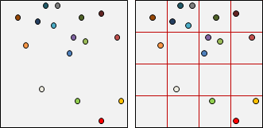
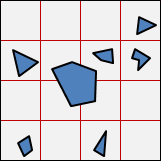
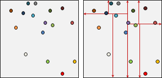

Region 資料結構 :
R-Tree
R-Tree

Bounding Volume Hierarchy 與 B-Tree 合體。
Region 資料結構 :
Uniform Grid
楔子
請你嘗試發掘，這一系列的資料結構是為了解決什麼問題呢？
Uniform Grid
嗯，就是方格紙。將整個世界劃分為等寬方格。
實作方式是一個二維陣列，對應方格紙。陣列每一格是一個串列，對應每個方格包含的資料。
資料可以是任何東西，例如點、線段、三角形。
如果資料跨據多個格子，那麼可以同時儲存於多個格子，或者只儲存於其中一個格子。隨你開心。
插入、刪除、搜尋的時間複雜度是 O(N) ， N 為資料數量；然而，串列長度通常遠少於 N ，因此這種時間複雜度標記法缺乏意義。
Region 資料結構 :
Quadtree
Region 資料結構 :
k-Dimensional Tree
k-Dimensional Tree
額外繪製垂直線、水平線來分割區域。由於概念類似 KD-Tree ，所以大家沒有另起他名，直接沿用舊名。
此處的 KD-Tree ，注重每筆資料的邊界範圍；原本的 KD-Tree ，注重每個座標點的位置先後順序。兩者用途不一樣。
採 top-down 方式，依照某一個座標軸排序所有資料（通常是跨距最廣的那個座標軸），將資料等分為左右兩堆，遞迴分割下去。
插入、刪除、搜尋的時間複雜度是 O(N) ， N 為資料數量；然而，樹的高度通常遠少於 N ，因此這種時間複雜度標記法缺乏意義。
缺點是：資料跨區時，不知該安置於哪區。除非資料是點。
Region 資料結構 :
Bounding Volume Hierarchy
Region 資料結構 :
R-Tree
R-Tree
Bounding Volume Hierarchy 與 B-Tree 合體。